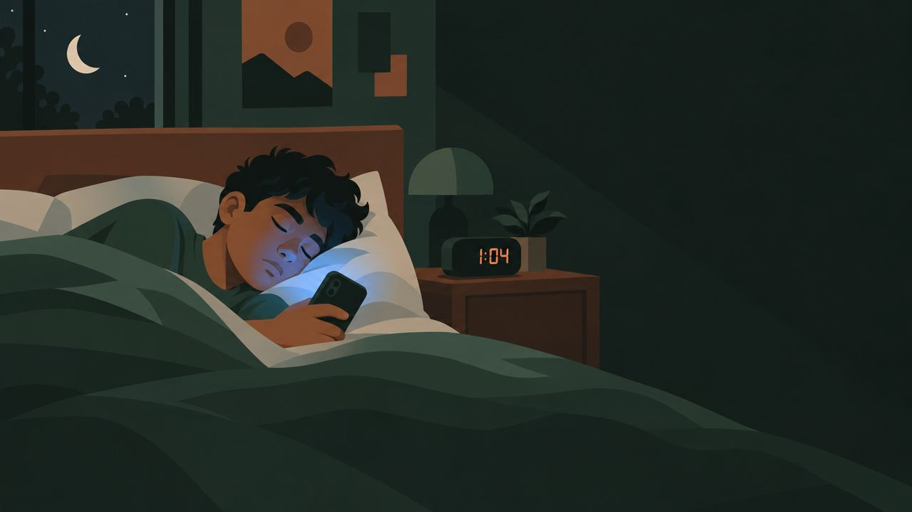
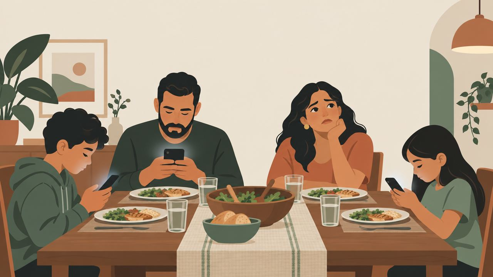
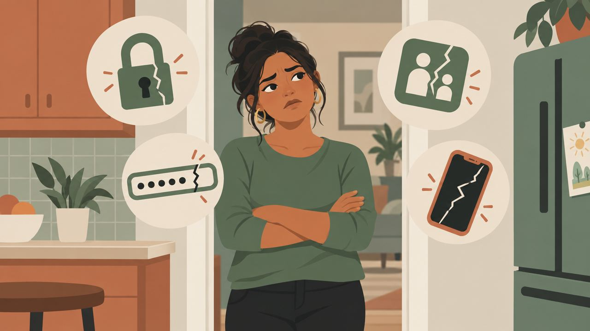
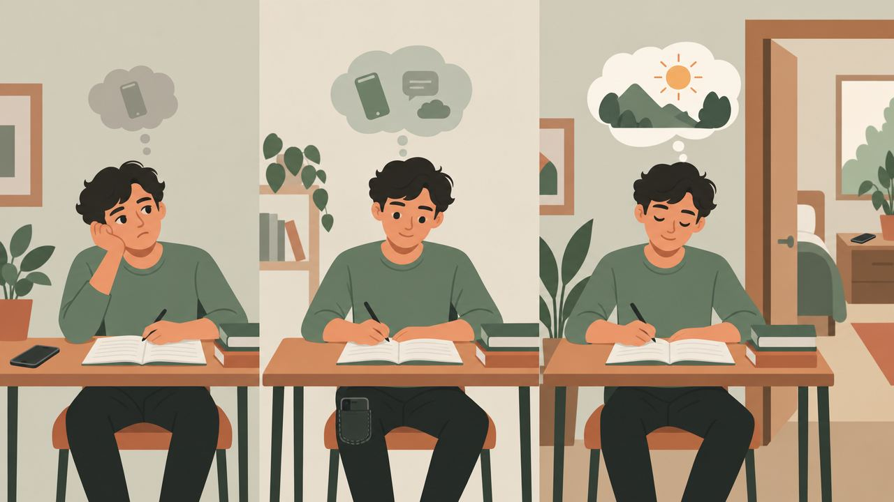
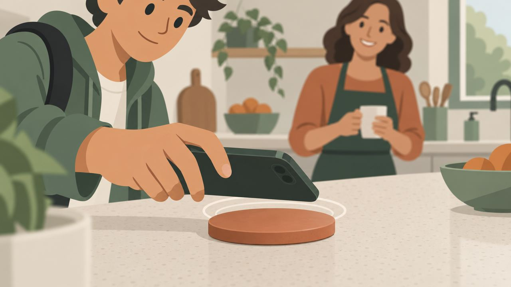
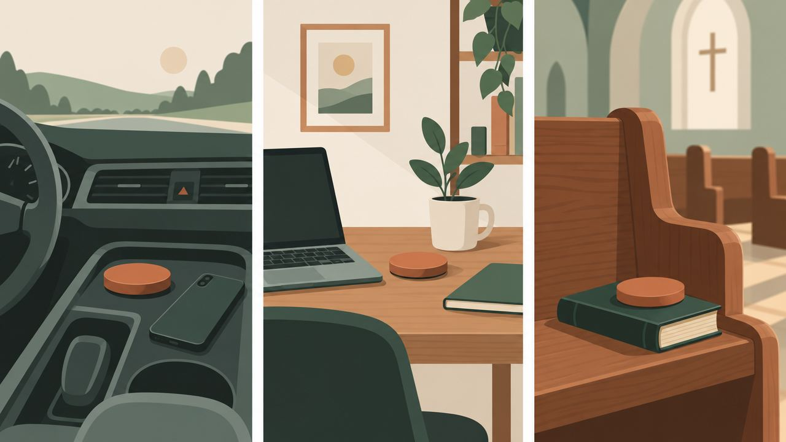

Del anuncio al recibo, tal como lo vive un padre.
Cada paso de abajo es una página real que puedes abrir y recorrer. El orden es el que pediste: anuncio con misterio → quiz → resultado + VSL → programa de $7 → discos → OTO 2 → OTO 4/6 → gracias. Nada toca GHL; se pega como código.
Recorrer el funnel desde el quiz →Los dos videos
AD-M1 · 50 s · 9:16 · "No es tu culpa". Explainer 2D, voz Ana, subtítulos integrados. Para Meta Reels/Stories y TikTok.
VSL-M · 5:48 · 16:9 · siete secciones: promesa → dolor → ciencia (UT Austin, AAP, phubbing) → la idea "no es tiempo, es lugar" → el programa $7 → la tecnología → cierre. La oferta aparece en la página al minuto 3:48.
Ocho pasos, siete páginas
Video ad 9:16
Misterio + dolor + "mi familia encontró la solución". CTA: responde 5 preguntas.Meta · TikTokQuiz
5 preguntas con puntaje, luego nombre + correo + WhatsApp para ver el resultado.LeadResultado + VSL
Puntaje y banda, el VSL, y la oferta de $7 que aparece a los 3:48.ViewContentCheckout $7
Un paso. Order bump $9: audio narrado por Ana + plantillas.PurchaseDiscos · cantidad
"¿Cuántos lugares quieres asegurar?" $39 c/u, 6 ubicaciones explicadas, 1–6.Upsell 1OTO · 2 más al 30%
Solo si eligió 1. $55 por dos más.OTO 2OTO · 4 al 50% / 6 al 65%
$78 por 4 o $82 por 6. Escalera: 1=$39 · 2=$55 · 4=$78 · 6=$82.OTO 3Gracias
Recibo, próximos pasos, WhatsApp de la familia.EntregaLo que tiene que pasar por cada 100 leads
| Métrica | Supuesto | Valor |
|---|---|---|
| Costo por lead (quiz) | CPM $15 · CTR 2% · quiz 55% · opt-in 70% | $1.80 |
| Compradores $7 | 10% de leads | 10 |
| Bump $9 | 30% de compradores | +$27 |
| Discos (upsell 1) | 35% @ $62 promedio | +$217 |
| OTO adicional | 15% @ $40 | +$60 |
| Ingreso por 100 leads | $70 + 27 + 217 + 60 | $374 |
| Costo de 100 leads | $180 | |
| AOV por comprador | $37 | |
| Break-even CPA | AOV menos COGS (~$12) | ≈ $25 |
El $7 pierde dinero a propósito. La utilidad está en los discos y en la secuencia de 14 días por correo/SMS para quienes no compraron discos.
Montaje
- 7 páginas como código personalizado (los HTML de esta carpeta). Imágenes en /assets/ill, videos en /video/out.
- Productos: Programa $7 · Kit $9 · Disco $39 (cantidad) · OTO-2 $55 · Pack 4 $78 · Pack 6 $82.
- Workflows: lead del quiz → tag + 3 emails/2 SMS en 72 h con el link del resultado · comprador $7 → entrega PDF + 14 días hacia discos · comprador discos → tracking + guía.
- Eventos ya cableados: QuizStart, QuizComplete, Lead, VideoPlay, VideoWatched50/75, OfferRevealed, InitiateCheckout, Purchase (valor dinámico).
- Placeholders: precios, WhatsApp, historia de la familia, el bloque de pago (widget de Stripe en GHL).
Las ocho escenas








Estilo plano, paleta Pausa, familia latina. Sirven también como estáticos (recortar a 4:5) y como fondos de las páginas.
Tres líneas que no cruzamos
- Los estudios se citan como son: Ward et al. 2017 (UT Austin) es experimental; AAP es una recomendación; phubbing es correlacional y el copy dice "se asocia".
- El disco no geolocaliza ni "apaga el teléfono en una zona": las apps se apagan por horario y se desbloquean al tocarlo. Así está escrito en todas las páginas.
- No hay testimonios inventados. Las escenas son ilustraciones de "cómo se ve", no de clientes reales.